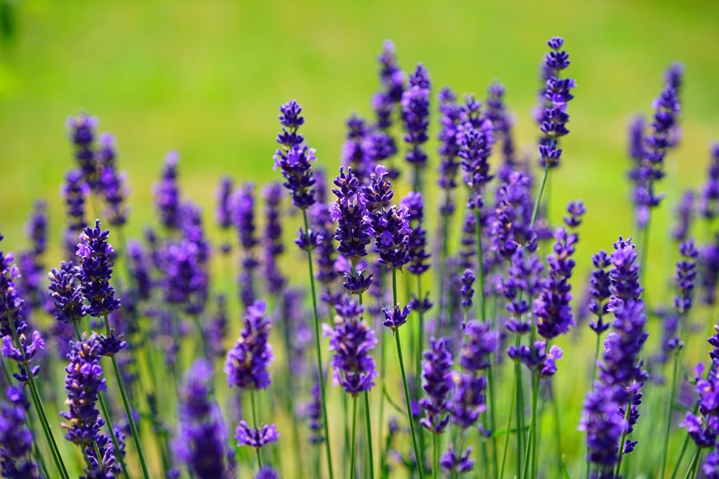

Jaguar
Jaguars are the largest cats, and the third largest overall. Jaguars and leopards look similar, but you can tell them apart if you look closely. Jaguars are larger and have shorter, thicker tails.
Jaguars are the largest cats, and the third largest overall. Jaguars and leopards look similar, but you can tell them apart if you look closely. Jaguars are larger and have shorter, thicker tails.

Meerkats belong to the mongoose family and are also known as slender-tailed mongooses. These animals have a tolerance for venom, which is why they can eat scorpions and venomous snakes.

This rare species was thought to have been lost from the wild until it was rediscovered in 1992. Surviving populations are extremely fragmented and vulnerable.
This American animal still lives in isolated habitats in the deserts and grasslands of Texas and a few other states, though its habitat is shrinking due to human activities such as agriculture.
Chimpanzees use many vocalizations, gestures and facial expressions to communicate with members of their family and others outside their troop. When a chimp "grins" they are really afraid or anxious. When they are happy they make a grunting noise.
The bald eagle is the second largest bird of prey in North America after the Californian condor. It is named after its conspicuous white (but fully-feathered) head.
| Name of the Plants | Features | Picture of the Plant |
|---|---|---|
| Hibiscus | Hibiscus is a genus of flowering plants in the mallow family, Malvaceae. The genus is quite large, comprising several hundred species that are native to warm temperate, subtropical and tropical regions throughout the world. | |
| Orchid | Orchidaceae, commonly called the orchid family, is a diverse and widespread family of flowering plants, with blooms that are often colourful and fragrant. Along with the Asteraceae, they are one of the two largest families of flowering plants. | |
| Lavender | Lavandula is a genus of 47 known species of flowering plants in the mint family, Lamiaceae. It is native to the Old World and is found in Cape Verde and the Canary Islands, and from Europe across to northern and eastern Africa, the Mediterranean, southwest Asia to India. |  |
| Bonsai | Bonsai is a Japanese version of the original traditional Chinese art penjing or penzai. Unlike penjing, which utilizes traditional techniques to produce entire natural sceneries in small pots that mimic the grandiose and shape of real life sceneries, the Japanese "bonsai" only attempts to produce small trees that mimic the shape of real life trees. |  |
| Bird's-nest Fern | Asplenium nidus is an epiphytic species of fern in the family Aspleniaceae, native to tropical southeastern Asia, eastern Australia, Hawaii, Polynesia, Christmas Island, India, and eastern Africa. It is known by the common names bird's-nest fern or simply nest fern. |  |
| Fishtail / Sword fern | Nephrolepis exaltata, known as the sword fern or Boston fern, is a species of fern in the family Lomariopsidaceae native to tropical regions throughout the world. This evergreen plant can reach as high as 40-90 centimetres, and in extreme cases up to 1.5 metres. | |
| Bamboo | Bamboos are a diverse group of evergreen perennial flowering plants in the subfamily Bambusoideae of the grass family Poaceae. Giant bamboos are the largest members of the grass family. |